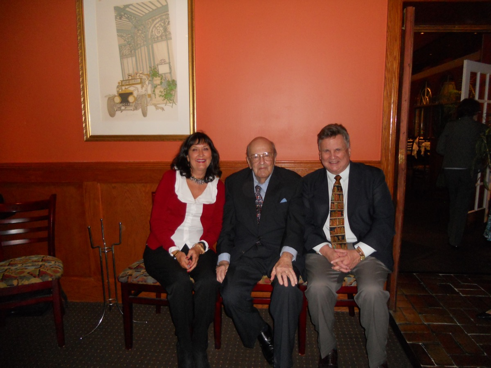
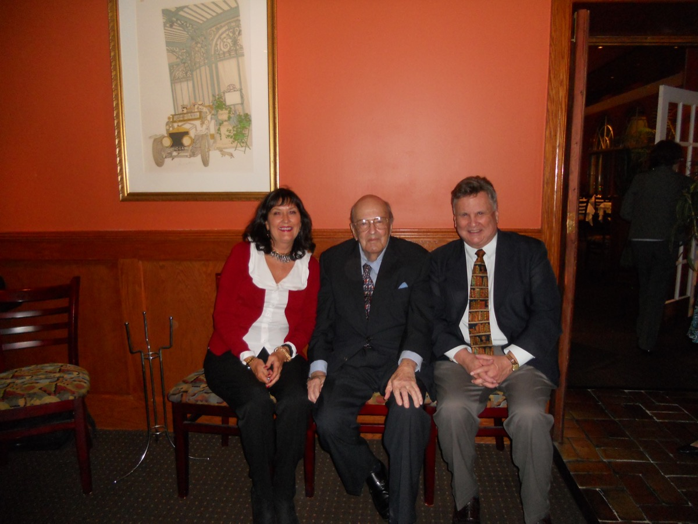

Earl Baker
Public Affairs Professional
History
Lincoln
23/01/12 19:50
I recently had the opportunity to participate in a seminar with Professor Harry Jaffa, one of the foremost writers and thinkers on the subject of liberty in our era.
He is the author of the influential "Crisis of the House Divided" which concerns Lincoln and the critical period of the Civil War. Here he is joined by me with my friend, the Director of the Ryan Center at Villanova University, Dr. Colleen Sheehan. The Center keeps alive issues of liberty looked at from a Constitutional point of view.

He is the author of the influential "Crisis of the House Divided" which concerns Lincoln and the critical period of the Civil War. Here he is joined by me with my friend, the Director of the Ryan Center at Villanova University, Dr. Colleen Sheehan. The Center keeps alive issues of liberty looked at from a Constitutional point of view.

Churchill
26/04/11 20:33
Admirers of Winston Churchill gathered recently in Charleston, South Carolina. It was actually not because it was the 150th anniversary of the shot at Fort Sumter which started the Civil War, which was coincidental, but because when Churchill was hit by a car in New York in 1932
Read More...
Read More...
Federalism
02/09/10 21:08
Since I was a poly sci professor interested in the topic of “federalism” for many years, it was a real thrill to see that a colleague and acquaintance of mine from that period of my career, Elinor Ostrom of Indiana University, had been awarded the Nobel Prize in Economics earlier this year.

The idea of overlapping jurisdictions and shared governance has always fascinated me whether as a teacher and writer in the field, or a practitioner within the political system at several “levels.”
Read More...